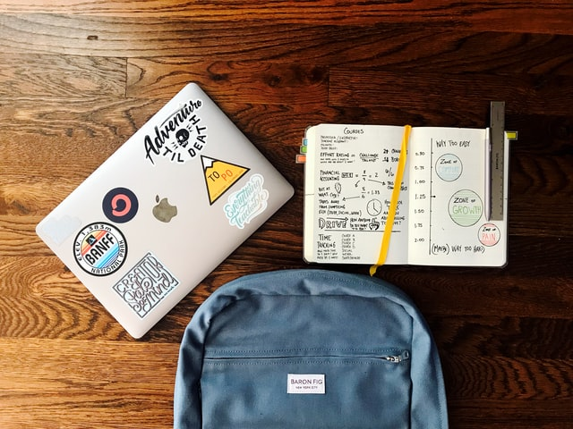
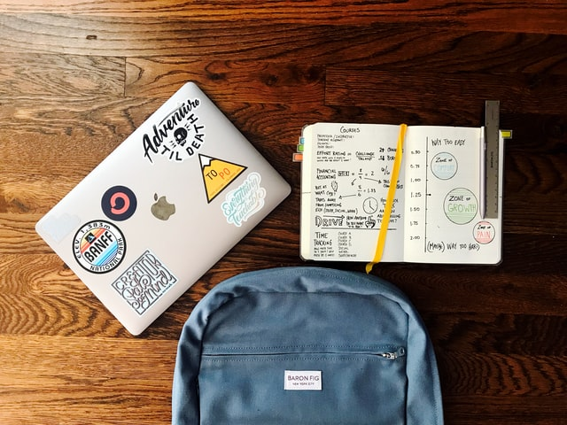

The Student Food Crisis
The initial issues students will find when it comes to food will be budgeting and understanding what tools work well. Even seasoned students may be unused to or completely unaware of what appliances and tools can be useful even in limited living spaces such as dormitories. This website's main goal is to show any student the different tools, techniques, and methods they can implement to not only increase their standard of meals in terms of budget but also quality. This site will provide insights into what appliances could be considered as well as how to make cost-efficient and genuinely good food, hopefully pulling students from having to endure long weeks on instant noodles and boring oatmeal. As students will need to be smart about their spending, with high costs and loans rising each year, food shouldn’t be another stress to pile on during these important years. Unlike other sites that provide similar information, this site’s goal is to provide ‘everything’ the hungry student needs, not just recipes or neat ideas. This site is a one-stop-shop for the needs of prospective or experienced students.
 
